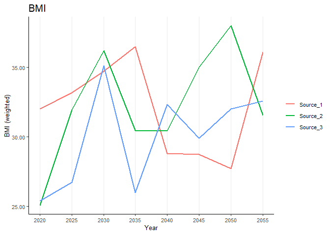

The goal of healthgpsrvis is to plot and visualise data related to Health-GPS.
Getting Started
Prerequisites
- RStudio installed
Installation
You can install the development version of healthgpsrvis from GitHub with:
# install.packages("devtools")
devtools::install_github("imperialCHEPI/healthgpsrvis")Example
This is a basic example which shows you how to solve a common problem:
library(healthgpsrvis)
data_mean_weighted <- data.frame(
time = rep(seq(2020, 2055, by = 5), 3),
weighted_bmi = runif(24, 25, 38),
weighted_energyintake = runif(24, 1700, 2750),
weighted_fat = runif(24, 38, 120),
weighted_obesity = runif(24, 0.1, 0.7),
weighted_protein = runif(24, 46, 210),
weighted_sodium = runif(24, 874, 2768),
source = rep(c("Source_1", "Source_2", "Source_3"), each = 8)
)
plot_bmi <- riskfactors("bmi", data_mean_weighted)
plot_bmi
#> Warning: Use of `data_mean_weighted$time` is discouraged.
#> ℹ Use `time` instead.
What is special about using README.Rmd instead of just README.md? You can include R chunks like so:
# summary(cars)You’ll still need to render README.Rmd regularly, to keep README.md up-to-date. devtools::build_readme() is handy for this.
You can also embed plots, for example:
In that case, don’t forget to commit and push the resulting figure files, so they display on GitHub and CRAN.